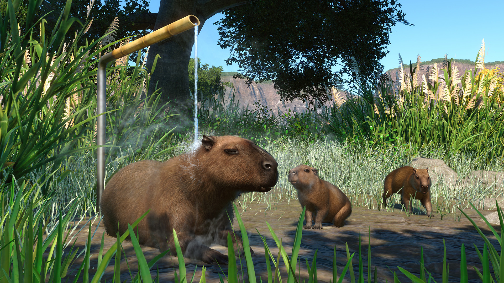
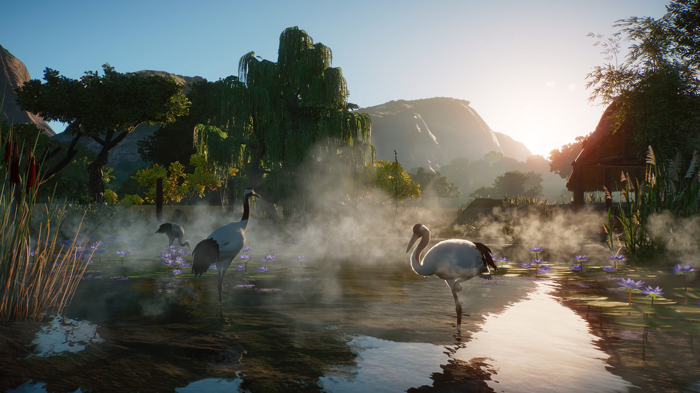
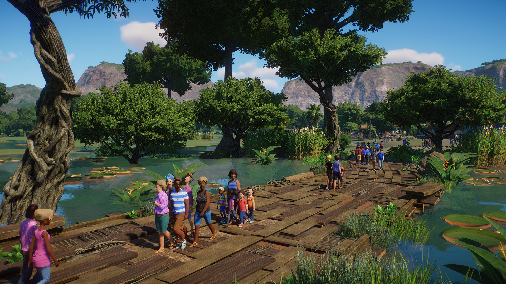
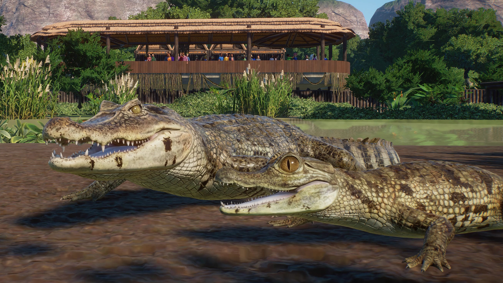
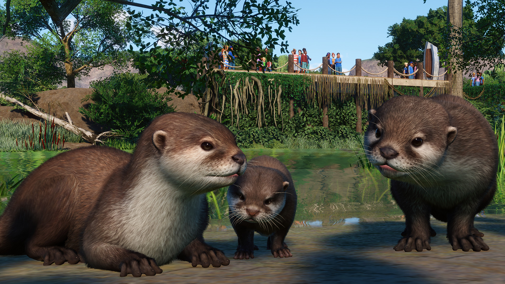
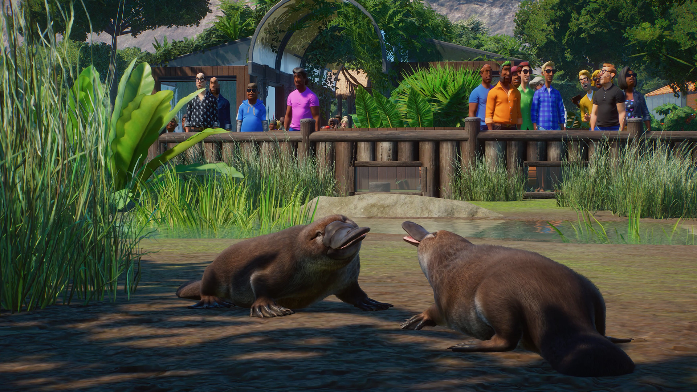
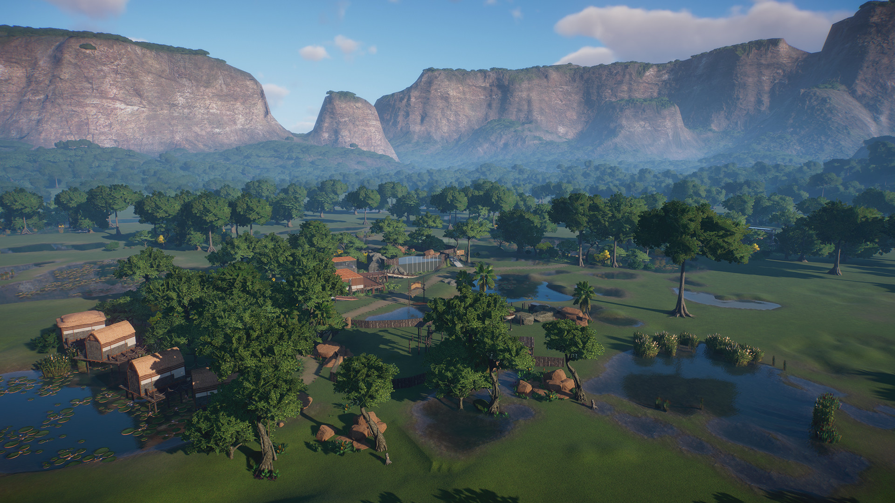
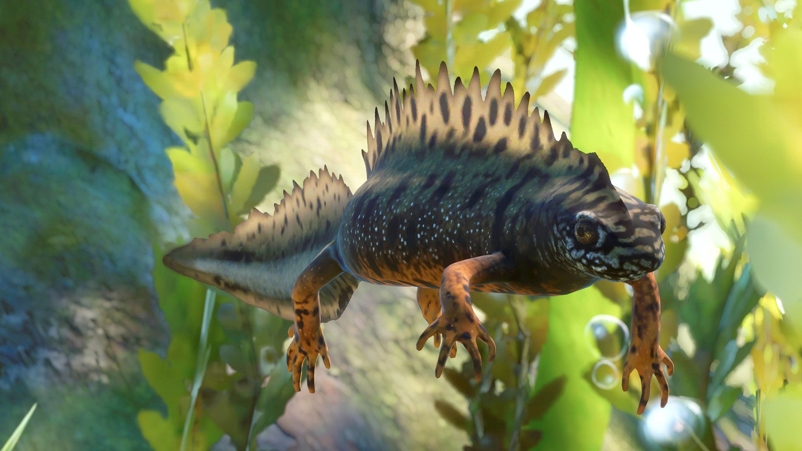
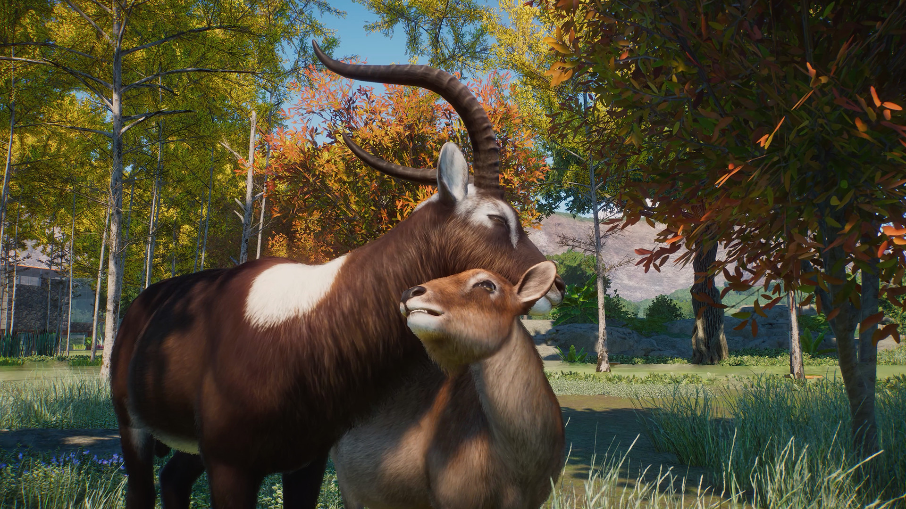
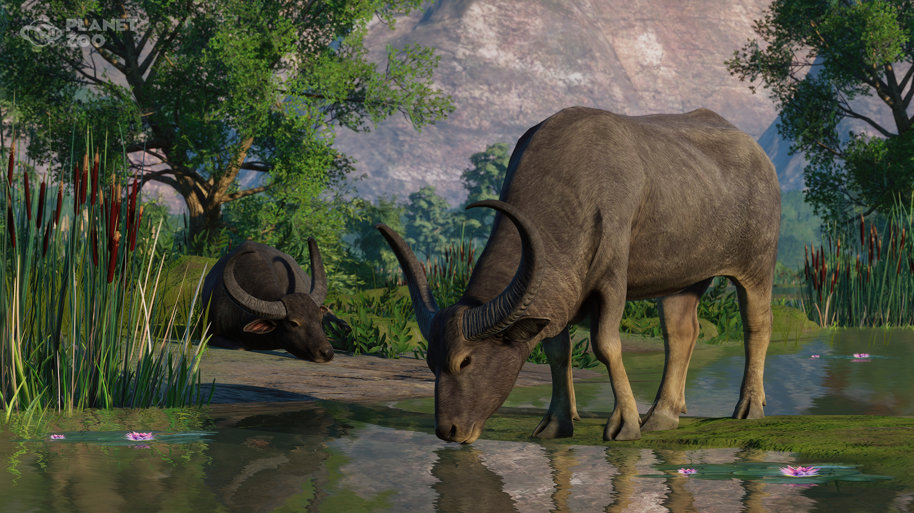

Wetlands Animal Pack
Data wydania: 12 kwietnia 2022
Cena pakietu: 35.99 zł
Oficjalny zwiastun DLC Wetlands Animal Pack
Gdzie jest woda, tam jest i życie! Odkryj bogactwo terenów podmokłych w Planet Zoo: Pakiet zwierząt z mokradeł i poznaj osiem nowych, różnorodnych gatunków.
Wśród dodanych na życzenie zwierząt znajduje się siedem zwierząt, które możesz umieścić na wybiegu oraz jeden płaz – gatunki te obejmują uroczą kapibarę, charakterystycznego dziobaka i silnego bawołu indyjskiego. Poza ośmioma niesamowitymi dodatkami, z których składa się Pakiet zwierząt z mokradeł, zawiera on również zupełnie nowy scenariusz z wyzwaniem. Udaj się do Pantanalu w Brazylii – regionu, który obejmuje największe na świecie podmokłe łąki – i wykaż się doświadczeniem w zarządzaniu ogrodem zoologicznym w inspirującym azylu dla zwierząt. Podejmiesz się tego wyzwania?
Wśród dodanych na życzenie zwierząt znajduje się siedem zwierząt, które możesz umieścić na wybiegu oraz jeden płaz – gatunki te obejmują uroczą kapibarę, charakterystycznego dziobaka i silnego bawołu indyjskiego. Poza ośmioma niesamowitymi dodatkami, z których składa się Pakiet zwierząt z mokradeł, zawiera on również zupełnie nowy scenariusz z wyzwaniem. Udaj się do Pantanalu w Brazylii – regionu, który obejmuje największe na świecie podmokłe łąki – i wykaż się doświadczeniem w zarządzaniu ogrodem zoologicznym w inspirującym azylu dla zwierząt. Podejmiesz się tego wyzwania?
Galeria zdjęć










O tym DLC
Powitaj w swoim zoo osiem niezwykłych gatunków! Pakiet zwierząt z mokradeł zawiera zwierzęta dodane na życzenie naszej społeczności, takie jak kapibara, dziobak, wyderka orientalna, kajman okularowy, kob nilowy, bawół indyjski, żuraw mandżurski i dunajska traszka grzebieniasta. Wprowadź ulubione zwierzęta do istniejących już ogrodów zoologicznych albo zbuduj zupełnie nowe, tworząc wspaniałe wybiegi, które odzwierciedlają naturalne środowisko tych gatunków. Zaproś gości do ekscytującej podróży, podczas której dowiedzą się więcej o zwierzętach z mokradeł.
Nowe animacje
Możesz obserwować, jak nowe zwierzęta zaczynają się czuć jak w domu. Zrelaksuj się u boku kapibary, patrząc, jak korzysta z nowego urozmaicenia – kranu z gorącą wodą; przyłap dziobaka na nurkowaniu; podziwiaj pełne gracji piruety w wodzie wyderki orientalnej i obserwuj taniec godowy żurawia mandżurskiego. Od dużych wołowatych, takich jak bawół indyjski, po charakterystyczne płazy, takie jak dunajska traszka grzebieniasta – każdy z tych gatunków na swój niepowtarzalny sposób jest związany z mokradłami na swoich ojczystych terenach i każdy z nich stanowi ważną część lokalnego ekosystemu.
Ekscytujący nowy scenariusz
Wybierz się do bogatego i tętniącego życiem brazylijskiego Pantanalu i sprawdź swoje umiejętności zarządzania zoo na największych na świecie mokradłach. Znajduje się tu azyl dla zwierząt, którego celem jest ratowanie zagrożonych gatunków. Udziel mu wsparcia, przejmując obowiązki dyrektora. Adoptuj zwierzęta i opiekuj się nowo przybyłymi przedstawicielami różnych gatunków, pielęgnując je i pomagając im się rozwijać przez całe ich życie. Aby twoje nowoczesne zoo osiągnęło sukces, musisz także zadbać o gości, zabawiać ich i dostarczać rozrywki, a także edukować ich w kwestii dobrostanu zwierząt i spełniać ich oczekiwania. Czy będziesz w stanie stworzyć nowym zwierzętom prawdziwy dom?